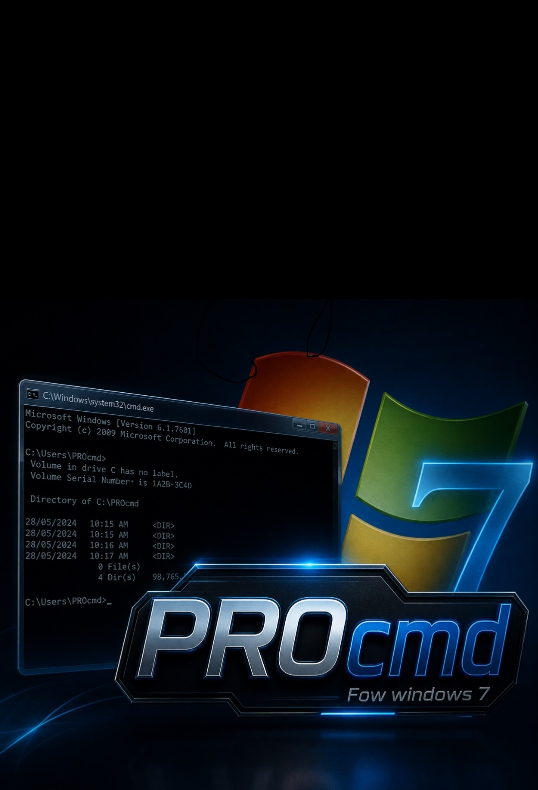

A professional, modular, and high-performance terminal emulator optimized for Windows 7 systems.

Designed with a decoupled architecture. Easily extend the functionality with custom modules.
Smart privilege management. Automatically requests Administrator access when required.
High responsiveness. Commands run in dedicated threads, keeping your interface fluid.
Write and debug your .bat scripts instantly with our built-in intelligent editor.
Python 3.8
Windows 7 (x86)
Modular / Multi-threaded